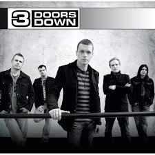
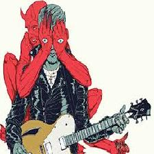
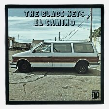

La liste des artistes présents cette semaine :
3 doors down :
Chansons connues: Kryptonite, When I am gone, It's not my time
Chansons connues: Kryptonite, When I am gone, It's not my time

3 Doors Down est un groupe de rock américain, originaire d'Escatawpa, dans le Mississippi.
Genre musical: Post-grunge, hard rock, rock alternatif, metal alternatif
Pour accéder à leur site cliquez ici
Genre musical: Post-grunge, hard rock, rock alternatif, metal alternatif
Pour accéder à leur site cliquez ici
Red Hot Chili Peppers :
Chansons connues: Californication, Can't stop, Dark Necessities
 Les Red Hot Chili Peppers (parfois abrégé RHCP ou plus simplement Red Hot) sont un groupe de rock américain, originaire de Los Angeles, en Californie.
Les Red Hot Chili Peppers (parfois abrégé RHCP ou plus simplement Red Hot) sont un groupe de rock américain, originaire de Los Angeles, en Californie.
Genre musical: Funk rock, rock alternatif, funk metal, fusion
Pour accéder à leur site cliquez ici
Chansons connues: Californication, Can't stop, Dark Necessities
Les Red Hot Chili Peppers (parfois abrégé RHCP ou plus simplement Red Hot) sont un groupe de rock américain, originaire de Los Angeles, en Californie.Genre musical: Funk rock, rock alternatif, funk metal, fusion
Pour accéder à leur site cliquez ici
Queen of the Stone Age :
Chansons connues: The Vampyr of time and memories, No one Knows, The Way you used to do
Chansons connues: The Vampyr of time and memories, No one Knows, The Way you used to do

Queens of the Stone Age (parfois abrégé en QOTSA) est un groupe de rock américain, originaire de Palm Desert, en Californie. Il est formé en 1996 suivant la dissolution du groupe Kyuss.
Genre musical: Rock alternatif, Stoner rock, Hard rock, Metal alternatif
Pour accéder à leur site cliquez ici
Genre musical: Rock alternatif, Stoner rock, Hard rock, Metal alternatif
Pour accéder à leur site cliquez ici
The Black Keys :
Chansons connues: Lonely Boy, Tighten up, Thickgreakness
Chansons connues: Lonely Boy, Tighten up, Thickgreakness

The Black Keys est un groupe de blues rock américain, originaire d'Akron, dans l'État de l'Ohio. Le groupe est composé du chanteur et guitariste Dan Auerbach et du batteur Patrick Carney.
Genre musical: Garage rock, Blues rock, Rock indépendant
Pour accéder à leur site cliquez ici
Genre musical: Garage rock, Blues rock, Rock indépendant
Pour accéder à leur site cliquez ici